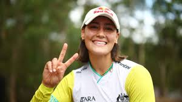
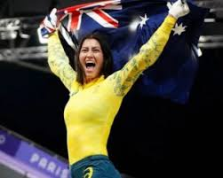

Biografia
Saya Sakakibara nacio el 23 de agosto de 1999 en Gold Coast Australia

Es una cometidora que a pasado por muchos percasnses como sus diversas conmociones cerebrales que durante muho timepo casi hacen que saya deje el deporte sin embargo sakakibara continuo con su sueño y aunque en tokio no pudo competir a causa de un acidente en paris volvio mas fuerte que nucna y se llevo el oro con una competencia perfecta quedadno de primero en todas la rondas

Ademas de eso acumula 5 camponatos muniales donde a demostrado ser la nueva princesa de el bmx
Volver a la pagina principal